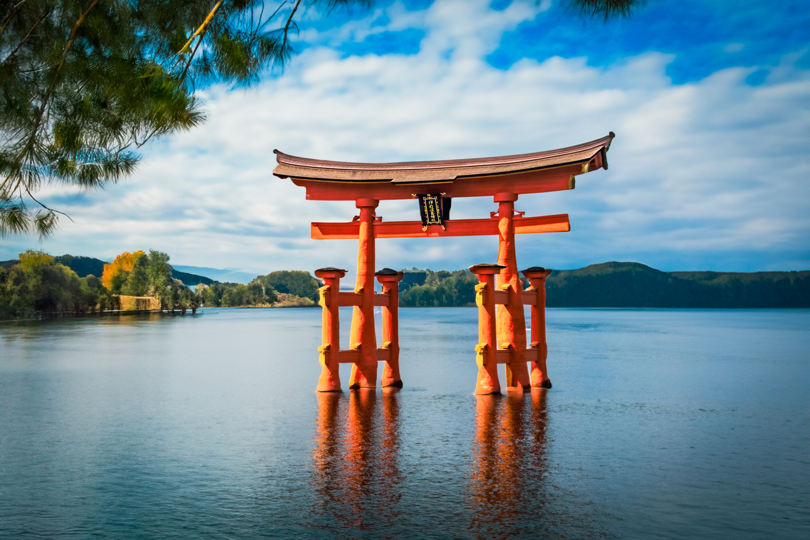
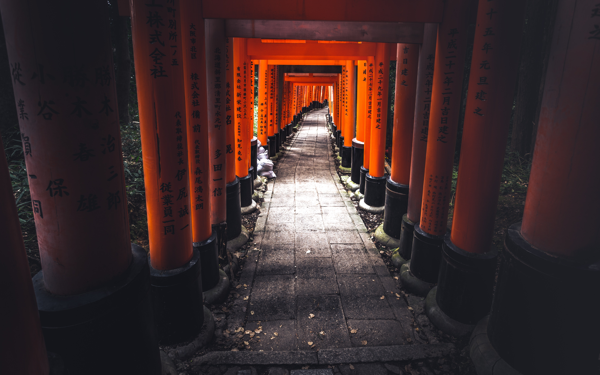

Home
Asia
America
Europe
Discover Asia's Hidden Treasures:
Japan, Korea, and Vietnam
JAPAN

MOUNT FUJI
Mt. Fuji is the tallest peak in Japan, the result of volcanic activity that began approximately 100,000 years ago.
Today, Mt. Fuji and the surrounding area are a popular recreational destination for hiking, camping and relaxation.

ITSUKUSHIMA JINJA
Itsukushima Shrine is the only shrine and O-Torii gate in Japan built where the tide swells beneath it and retreats into
the distance. The Main Shrine connected by beautiful corridors to the Marodo Shrine, Tenjin Shrine and the Noh theatre stage are
all in perfect balance with the nature surrounding it.

FUSHIMI INARI TAISHA
The road is rugged, winding winding, squeezing through the rolling mountains or pristine jungle,
and especially the picturesque terraced fields of the Thai, H'Mong. The Thai name Khau Pha pass with the meaning of the horn, as the mountain passes as the clouds rise over the sea.
KOREA

Namsan Seoul Tower
The N Seoul Tower, officially the YTN Seoul Tower commonly known as the Namsan Tower or Seoul Tower,
is a communication and observation tower located on Namsan Mountain in central Seoul, South Korea. It marks the highest point in Seoul. Built in 1969 the tower was opened to the public in 1980.

GYEONGBOKGUNG PALACE
Gyeongbokgung Palace is the largest and most striking of the 5 grand palaces built during the Joseon dynasty. Built in 1395 by King Taejo,
this iconic landmark lets you experience life in Joseon-era Korea via free guided tours, re-enactments of royal rituals, and extensive displays of artefacts and period costumes.

SEOUL FOREST
Seoul Forest opened in June 2005. The city government spent 235.2 billion won in development. It is the third largest park in Seoul city. Seoul Forest is a massive park dotted with over 400,000 trees and 100 different animals.
VIETNAM

TEMPLE OF LITERATURE
Temple of Literature honours Vietnam's finest scholars, and also offers visitors a chance to see a rare example of well-preserved traditional Vietnamese architecture.

TRANG AN
Trang An Vietnam features a 250-million-year-old geological system of limestone mountains with diverse ecosystems, including flooded forests,
limestone mountains, and archaeological and cultural relics.

KHAU PHA PASS
The road is rugged, winding winding, squeezing through the rolling mountains or pristine jungle,
and especially the picturesque terraced fields of the Thai, H'Mong. The Thai name Khau Pha pass with the meaning of the horn, as the mountain passes as the clouds rise over the sea.